Weekend Line-up
Preview / work-in-progress shows
We have announced around 47 of the festival's 48 shows. Every single show at the festival is a preview or work-in-progress — they may be rough around the edges!
Nish Kumar: THEM CHANGES
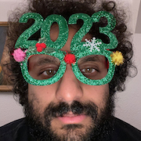
“I catch a paper boy, but things don’t really change” David Bowie
“Capitalists posing as compassionates be offending me” Kendrick Lamar
An hour of new material from a 37 year old occasional tv host.
Lou Sanders: Work and title in progress
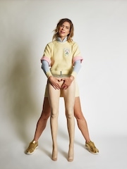
Let’s see if I can go for an hour without mentioning my kittens. Whatever happens happens!
Photo by Matt Stronge.
Larry Dean: Work in Progress
An hour of stand up from the award-winning comedian. As seen on BBC2’s Live At The Apollo and Mock The Week.
“Confessional storytelling at its funniest” ★★★★★ Herald
“Destined to become a household name” ★★★★ Telegraph
Kiri Pritchard-McLean
 A brand new hour of jokes from Kiri Pritchard-McLean (Have I Got News for You?, Live at the Apollo, Would I Lie To You?)
A brand new hour of jokes from Kiri Pritchard-McLean (Have I Got News for You?, Live at the Apollo, Would I Lie To You?)
Not sure what it's about yet but there is a routine about first aid in there.
Photo by Kayla Wren.
Ivo Graham: Organised Fun
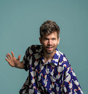
After dismantling a barge (Taskmaster), doxxing himself in the Doubletree (Off Menu), and blanking on the 1992 Ipswich Town crest (University Challenge), Ivo ropes his audience into more chaos against the clock. 'Humiliation's your thing, right?' His brother asked him at Christmas, and with the full existential ramifications of that still being processed, he's lining up a show with more risk than ever before (NB: previous shows have broadly been quite low risk). Expect quizzes, tangents and fluster. Best Show/Joke nominee 2019.
“Motormouthed finesse” ★★★★ Times
“I could watch him natter all day” Telegraph
★★★★ Guardian
Photo by Matt Stronge.
Olga Koch: Prawn Cocktail
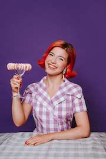
Olga Koch turned 30, got a master's degree, went on an adult gap year, got salmonella, lost herself, found herself and washed it all down with a delicious prawn cocktail. Think less Eat Pray Love and more Shake Scream Cry.
As seen on Mock the Week, QI, Late Night Mash, Frankie Boyle's New World Order and her Amazon Prime comedy special.
“A masterpiece” ★★★★★ BroadwayBaby
★★★★ Guardian
★★★★ Telegraph
★★★★★ Skinny
★★★★★ Sunday Post
Photo by Rachel Sherlock.
Rob Auton: The Rob Auton Show
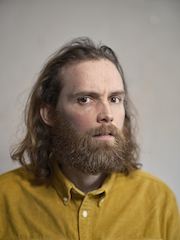
‘The Rob Auton Show’ is a show about Rob Auton. Rob Auton has written nine Edinburgh Fringe
comedy/theatre/spoken word shows on specific themes including yellow, the sky, faces, water,
sleep, hair, talking, time and crowds. In his tenth show Rob turns the pen on himself to explore the
memories and feelings that create his life on a daily basis.
“A genuine original.” Guardian
“Makes laughter out of wonder. We need him.” Scotsman
“Charming, eccentric and uplifting” Independent
“Brilliant” Stewart Lee
“One of my absolute favourites.” Daniel Kitson
Photo by Julian Ward.
Catherine Bohart: Work in Progress
An hour of new material from Catherine Bohart. As seen and heard on Live At The Apollo, Mock The Week, Roast Battle, 8 Out of 10 Cats, The Stand Up Sketch Show and The Guilty Feminist Podcast.
“Destined for stardom” Evening Standard
“The laughs keep coming and, finally, so does a tear or two. Marvellous” ★★★★ Times
“Beautifully-delivered hour” ★★★★ Skinny
“Packed full of laughs” ★★★★ Herald
“A winning mixture of self-deprecation and confidence” ★★★★ Beyond The Joke
“A fully developed comic voice” ★★★★ Fest
“Truly special” ★★★★ Edinburgh Festivals Magazine
Jamali Maddix
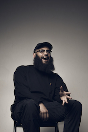
Jamali Maddix is working up a brand-new hour. Jamali is currently a series regular on Never Mind The Buzzcocks and has been seen on Taskmaster (Channel 4), Frankie Boyle’s New World Order (BBC Two) and his critically acclaimed series Hate Thy Neighbour for Vice.
★★★★ Sunday Times
★★★★ Independent
★★★★ Chortle
Photo by Matt Crockett.
Alison Spittle: Soup
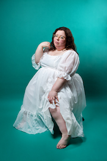
Soup: Comedian du jour, Alison Spittle is simmering with jokes and probably rage, she doesn't know what the burning sensation is. This silly goose has appeared on Off Menu, You're Dead To Me, Guilty Feminist, The Gargle and co-host of BBC Sounds Wheel of Misfortune podcast with Kerry Katona.
Tour support for Fern Brady and Maria Bamford.
Full sell-out Edinburgh Festival Fringe 2022 and voted one of British Comedy Guide's best reviewed shows.
“An hour of near faultless material” ★★★★ Skinny
“Had the full house rolling in the aisles” ★★★★ Daily Express
“Just hilarious” ★★★★ BroadwayBaby
Photo by Karla Gowlett.
Glenn Moore
Glenn Moore (Mock The Week, The Great American Joke-Off, Absolute Radio) tries out a couple of episodes of his new BBC Radio 4 stand-up series. It'll be him sat on a stool reading out jokes and getting your opinion on them, but he promises it's more fun than that sounds.
★★★★★ Chortle
★★★★★ Mail on Sunday
Photo by Natasha Pszenicki.
Janine Harouni: Man'oushe
Janine thought she knew her family. Then she took a DNA test and things got messy.
Off the heels of her New York Times recommended show ‘Stand Up With Janine Harouni (Please Remain Seated)’ comes a new hour from the Edinburgh Best Newcomer nominee. A work-in-progress exploring Janine’s Arab roots, pregnancy, and what happens when your DNA test does not go to plan.
Star of ITV2’s Buffering. Seen and heard on The Russell Howard Hour, The John Bishop Show, Comedians Giving Lectures, Question Team, The Stand Up Sketch Show and The Now Show. Over 80 million views online.
“Ready for her Netflix special” ★★★★★ Times
“A comedian clearly destined for bigger stages” ★★★★ Sunday Post
10 Comedians to Watch Guardian
10 Best Shows of 2019 Evening Standard
★★★★ Evening Standard
★★★★ Scotsman
★★★★ Telegraph
★★★★ Chortle
Kieran Hodgson: Big In Scotland
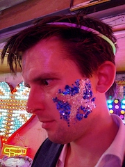
In 2020, the world changed forever, as Kieran Hodgson moved to Scotland. Now the three-time Edinburgh Comedy Award nominee is taking the high road/West Coast mainline to ARG from his new home of Glasgow to tell you how it's working out. He's that guy from the BBC's Two Doors Down (he's Gordon), the Bad TV Impressions viral videos of The Crown and Happy Valley, and three Channel 4 specials.
★★★★★ Guardian
★★★★★ Telegraph
★★★★ Times
★★★★ Scotsman
★★★★ Time Out
★★★★ Sunday Times
★★★★ Independent
★★★★ Chortle
★★★★ Fest
★★★★ List
Photo by Kieran Hodgson.
Heidi Regan: Finding An Inner Peace That All Your Friends Will Envy
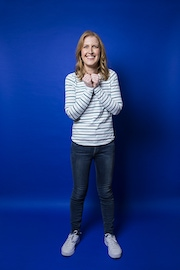
Join me as I put the fun back into searching for meaning in a chaotic universe, if we agree to spell universe as ‘fun-iverse’ which I believe we agreed to. This is a show about Santa, the Matrix, my patient wife... and other fictional concepts, heyooo! No, seriously she is a wonderful person. Winner of the BBC New Comedy Award (me, not my wife) and So You Think You’re Funny, host of two Radio 4 specials and tour support for Joe Lycett, Phil Wang and more.
Photo by Karla Gowlett.
Jordan Brookes: Snakes for Cats to Watch
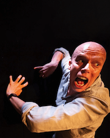
A while back, I found a video online of an animated snake crawling, made for entertaining cats. My cat got bored, but I carried on watching. I was transfixed. I'd like to recreate that experience for you. For an hour, all I'll be is a snake (man) for cats (people) to watch. (I cannot emphasise enough how this is not finished yet. Come along if you like things that aren't yet what they could be).
“Sublime lack of self-awareness” ★★★★★ List
“Performer teetering on the brink of sanity” ★★★★ Scotsman
Photo by Murdo MacLeod.
Ania Magliano: I Can't Believe You've Done This
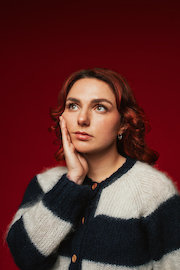
To the hairdresser at [redacted] Salon: You can take my money. You can take my dignity. You can take too much off the ends. But you cannot take my right to talk about it every day on stage.
This is a show about the worst haircut of Ania Magliano's life.
Ania's critically-acclaimed 2022 debut sold out its entire run in a week. She’s supported Marc Maron, Cat Cohen and Ed Gamble, and writes for Amelia Dimoldenberg’s Chicken Shop Date.
“Will have you crying with laughter” ★★★★ Guardian
★★★★ Times
★★★★ Time Out
★★★★ iNews.co.uk
Photo by Rebecca Need-Menear.
Stephen Bailey: Crass
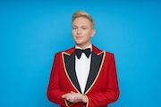
Star of BBC’s Live at the Apollo & Would I Lie To You?, comedian and TV’s Stephen Bailey makes a very welcome return to the stage with his brand new live show, CRASS.
From a working-class background in Manchester, six years working at Sainsbury’s, many a carvery and putting his hometown Denton on the map, a lot has changed for Stephen who is five years deep into a relationship, bought a home, become an uncle and climbed his way to the middle of the showbiz ladder – proving why he’s much more than a crass act.
Stephen has appeared on shows including Coronation St (ITV), Tipping Point Lucky Stars (ITV), Richard Osman’s House of Games (BBC), Unbreakable (BBC) and presented shows including Celebs on the Farm (C5) and Takeshi’s Castle (Comedy Central).
“He’s an arch-bitch with a winning smile, everyone’s favourite gay best friend. Bailey’s confident, funny and suitably rude” The Reviews Hub
“Bailey has a natural chemistry with his audience and this is where he truly comes into his own” Broadway Baby
“A natural talent for making audiences laugh” Metro
“A rising star” Sun
“A guilty pleasure” Daily Record
“Stephen's show was hilarious from the first line, and for the whole performance, I don't think a single joke died” Voice Magazine
Photo by Tom Pitfield.
Sian Davies: This Charming Man
Where do you go when your role models let you down? Join award-winning comedian and jumped-up pantry boy Sian on a journey through masculinity and gender identity via Salford Lads Club (puncture repair kit not included).
Edinburgh Comedy Awards Panel Prize winner for Best in Class, 2022.
Leicester Comedy Festival Best Debut Show winner, 2020.
“Compelling and distinctive” Scotsman
“Very funny observational stand-up... imagine a queer Peter Kay with more emotional literacy and a quiff like young Morrissey” Evening Standard
Directed by Elf Lyons and supported by Homotopia.
Photo by Andy Hollingworth.
Mat Ewins: Mr TikTok
With nearly 1,000 TikTok followers (at the time of going to print), be sure to book early to catch "the king of online" as he surfs cyberspace and reveals the World Wide Web's silliest internet videos.
★★★★ Guardian
★★★★ Times
★★★★½ Chortle
★★★★★ Independent
★★★★★ BeyondTheJoke.co.uk
Photo by Matt Crockett.
Max & Ivan: Life Choices
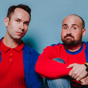
The 'essential' (Telegraph) Edinburgh Comedy Award-nominees return with a show about fatherhood, friendship, and the future. Creators of The Wrestling, Radio 4’s Casebook of Max & Ivan and ITV2’s Deep Heat. Their last show Commitment was one of the Fringe's best reviewed shows, The Guardian's 4th Best Show of the year, and was nominated for Best Comedy Show at the Chortle Awards.
“Astonishing” ★★★★★ Times
“Joyous” ★★★★ Independent
“Phenomenal” ★★★★★ Mirror
“First-rate” ★★★★ Scotsman
“The real deal” ★★★★ Guardian
“Immaculate” ★★★★ Sunday Times
“Astonishing” ★★★★½ Chortle
“Epic” ★★★★ Time Out
“Formidable” ★★★★★ British Theatre Guide
Photo by Rachel Sherlock.
Chloe Petts: If You Can't Say Anything Nice
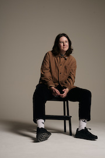
Fresh from her Edinburgh Fringe sellout debut, Chloe Petts returns with her follow up hour. Everyone complimented her on how polite she was with big issues in the last show so now she’s cashing in those points and plans on being really rude. Expect routines on Greta Thunberg, the Queen and calling you all a bunch of virgins.
“A first show that was worth waiting for” Guardian
Photo by Matt Crockett.
Spencer Jones: Making Friends
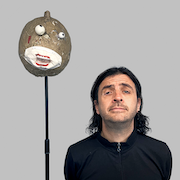 How would I currently describe my show? About 60 percent ready, with enough decent stuff to make it funny, but also enough failures and mistakes to give it that 'never going to happen again' feel. I'm driving all the way from Devon for this. Yeah you heard me. Devon.
Thanyia Moore: August
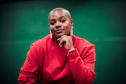
After 10 years of comedy, Thanyia was finally set to do her long awaited, anticipated debut hour at Edinburgh festival fringe. Everything was going to plan, until August came. A month that was forecasted to be bright and sunny, became dark and grey, and it took every bit of strength that Thanyia had, to make it through.
From running around Edinburgh, to hospital visits, all whilst being triggered by strangers who review you — Thanyia's month was not the 'norm'.
A show about mental strength, the female body and how awesome the NHS is in Scotland!
Photo by Chike Orakwue.
Nabil Abdulrashid: The Purple Pill
An hour of developing new material from comedian Nabil Abdulrashid.
As seen on Live at the Apollo, The Stand-Up Sketch Show, and Britain’s Got Talent.
“Refreshingly radical fare, smartly woven into a gag-packed set... a fresh comic voice” Telegraph
“The star by a wide margin... animated by a sardonic intelligence and sharp eye for the absurdities of racial discourse” Guardian
★★★★ Evening Standard
Photo by Jiksaw.
Bilal Zafar: IMPOSTER
Bilal Zafar, nominated for Best Newcomer at the Edinburgh Fringe and winner of New Act of the Year 2016, is back with a brand-new show about how his usually stress-free house share took a turn and his housemate tried to get him arrested several times. He has appeared on BBC One, BBC Two, BBC Radio 4 and built up his own online audience on Twitch as he plays an unhinged football manager in an ongoing improvised series.
“A natural storyteller with a very likeable stage presence” ★★★★★ Shortcom.co.uk
“Endearing, relaxed and naturally funny… hilarious” ★★★★ EdFestMag.com
Photo by Leslie Byron Pitt.
Tarot: Work in Progress
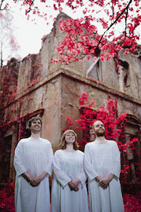
The best show of 2019 according to Chortle. The sixth-best show of 2022 according to The Guardian. Come watch us continue our slow descent into mediocrity in 2023.
“Bark out loud funny… the whole show is startlingly live” ★★★★ Guardian
“One of the balls-out funniest show of the Fringe” ★★★★½ Chortle
“Tarot will not give you nightmares, though you might wake laughing your head off” ★★★★ Evening Standard
★★★★ Telegraph
Photo by Drew Forsyth.
Celya AB: Second Rodeo
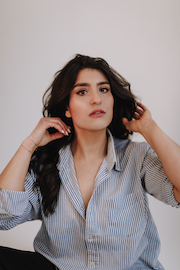
As a child, all she wanted was to be an adult. Now she's at the table, she wants out. Following her acclaimed, sell-out debut hour, Celya returns: expect tales of romance, a hologram and a near-death experience in Thorpe Park.
“A superb contriver of pithy, memorable lines” ★★★★ Scotsman
“The UK's Parisian comedy star is making waves” Guardian
“A comic shooting to fame” ★★★★ List
“One of the most striking acts around, combining magnetic stage presence with punchy material” Evening Standard
Chortle Best Newcomer 2022. As seen on BBC, Comedy Central and Funny Festival Live.
Photo by Rachel Sherlock.
Sikisa: Words in Progress
Back from doing her acclaimed debut hour, Sikisa is here with a new show and she is worried about words! She always thinks she says the wrong thing at the wrong time but asks the question – can you live in the modern world without speaking the language? A story of rediscovery and reflection.
As seen and heard on Live at the Apollo (BBC); Jonathan Ross’ Comedy Club (ITV), The Stand Up Sketch Show (ITV2) and the Off Menu podcast. Three-time Leicester Comedy Festival Awards nominee and BBC New Comedy Award Finalist.
“She exudes a lively energy.” Chortle
“Uproariously hilarious.” Scotsman
Photo by Swiss Chocolate Pictures / Adrian Tauss.
Stuart Laws? Is That Guy Still Going?
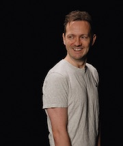
New show about getting married, being middle of the road and trying to be more honest.
“You'll struggle to find a comedian with a better jokes per minute rate… like a one-man episode of Arrested Development” Fest
As seen in Prime series Grave New World, you might know him from his viral twitter thread about a woman moving dirty plates onto another woman's table, his impression of Michael Caine saying “never” in Batman or the time he phoned a number on the side of a horse.
Photo by Edward Moore.
Freya Parker: It Ain't Easy Being Cheeky
Are you a little cheeky guy? Interested in the lifestyle? Come and join Freya as she navigates the struggles of trying to remain cheeky when it's raining trauma. From 50% of sketch duo Lazy Susan comes a 100% debut hour of stand-up. Hot topics to include death, bread and the joy of waving. It's hehehehe o'clock! As seen in the BBC Three Lazy Susan sketch show (“Outrageous and irreverent” ★★★★ (Guardian)), The Mash Report (BBC/Dave) and, in a twist no one saw coming, Jurassic World: Dominion. Edinburgh Comedy Award nominee.
Photo by Faye Thomas.
Siân Docksey: Pole Yourself Together!
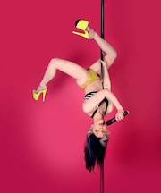
Pole dancing comedian Siân Docksey (as seen on BBC Three, “Joy and bewilderment in equal measure” ★★★★ Skinny) cheerfully ignores climate disaster, another recession and the steady creep of fascism to see if hanging off a stick can make you stop thinking about death.
A brand-new genre-smashing philosophical dance-comedy party. And/or just a woman having an existential crisis on a stick, probably.
Co-created with Jake Wood. Directed by Alexander Bennett.
“It's awesome and like no comedy you've ever seen” Funny Women
“Upsetting burlesque” Audience review
Photo by Millie Robson.
Daniel Foxx: Villain
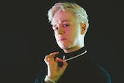
Heroes are boring. Draped in pearls and something uncomfortable from Zara, join Daniel Foxx as he tries out jokes for a show that will, eventually, be about embracing your inner baddie and having a little fun for goddamn once.
As seen on BBC One, BBC Three, Tour Support for Sofie Hagen, Josh Widdicombe and Judi Love, and on TikTok (’Bedtime Stories for Privileged Children’, ’The Supervillain’s Gay Assistant’).
Check out Daniel’s sketches on TikTok and Instagram!
“Funny and filthy” Graham Norton
“Natural magnetism”, “easy charisma” Steve Bennett, Chortle
Photo by Aemen Sukkar / Jiksaw.
Jodie Mitchell: Becoming John Travulva
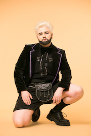
OFFIE Award winning “brilliant…natural comic” (Guardian) John Travulva critiques his best-known tick-box character: queer, non-binary, neurodiverse class-straddler Jodie Mitchell, who’s written on Sex Education and appeared on Comedy Central Live.
Photo by Captured by Corinne.
Vittorio Angelone
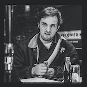
Following his 5-star, sold-out, award-nominated debut show in 2022, Vittorio Angelone returns to the Fringe in 2023 with his difficult second album.
After solving all the problems in the world with his first hour, his new show looks inward to who he thinks he is, who other comedians think he is, who you think he is, and the truth that lies somewhere in between those three.
Cerys Bradley: Not Overthinking Things 2019
Did Cerys cause their parents' divorce? Did they just make that interaction really awkward? Is a new year's resolution ever going to be enough to fix their personality? In this surreal and silly interactive stand-up show/birthday party, you get to decide. Cerys is a non-binary comedian and Autistic Excellence Award winner at the Edinburgh Fringe in 2022. As seen on BBC One Wales, BBC iPlayer and BBC Radio Wales.
“Very funny... this is a must see” ★★★★★ NeurodiverseReview.co.uk
“Important as it is hilarious” TheNational.wales
Directed by Elf Lyons.
Photo by Ian Bowkett.
Andrew O'Neill: Geburah
Nonbinary whirlwind returns to ARG.
Them off of Good Omens 2, Damned Andrew, Buzzocks, that sort of thing.
★★★★★ Scotsman
★★★★ Telegraph
★★★★★ Scotsgay
★★★★ Chortle
Tatty Macleod: Fugue
Better known as, That French TikTok Lady, Tatty Macleod has gained a huge online following thanks to her hilarious and astute observations of French and British culture. Born in Zimbabwe and raised in France to British parents, Tatty has spent her life vacillating between cultures. In this, her debut hour, she unpicks that process of cultural adaptation. She shares her own experience of being a Roast Beef in France and a Frog in England, as she tries to get to the bottom of what makes us who we are and where we belong.
Photo by Rachel Sherlock.
Tom Mayhew: This Time Next Year, We'll Be Millionaires!
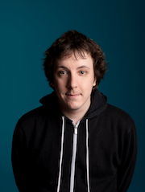
Working-class comedian Tom Mayhew returns to the Fringe with a show about dreams and endless hope. But it's mainly jokes about how weird and annoying capitalism is. As heard on The Alexei Sayle Podcast.
“Passionate, articulate and hilarious.” ★★★★ Skinny
“Mayhew is a voice that needs to be heard” ★★★★ Chortle
“Comedy shining a light on some grim, unjust places” ★★★★ Scotsman
“This is political comedy from a fresh and necessary perspective” ★★★★ TheWeeReview
“Tory-hating leftie” ★★★★ Daily Mail
“The acceptable face of class war” Mark Watson
Photo by Andy Hollingworth.
Priya Hall: Grandmother's Daughter
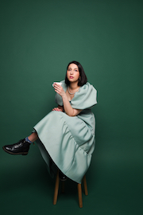
Priya Hall is obsessed with her nan to an unhealthy degree. Her debut show Grandmother’s Daughter is a joyful tribute to one old Welsh lady and the impossible standards Priya has to live up to as she prepares to become a matriarch of her own family. Packed with a level of oversharing that borders on the unhinged, this show promises a healthy dose of queer joy, storytelling and more jokes about sperm than Priya intended.
As seen on BBC One, BBC Three, Comedy Central, BBC Radio 4 and more.
Photo by Rachel Sherlock.
Lulu Popplewell: actually actually
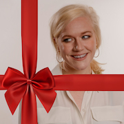
In her debut solo show, failed child actor and now successful comedian Lulu Popplewell explores the links between Love Actually, smoking crack, the Daily Mail and sunburn.
Is love actually all around? Why is addiction more relatable than recovery? Which drug would Mr Bean be most likely to take?
None of these questions satisfactorily answered and more!* A daft, rude and thoughtful hour of jokes, actually.
*One song.
Photo by Edward Moore.
Leila Navabi: Composition
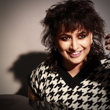
Welsh, Brown, Gay, Gen-Z comedian Leila Navabi, (BBC New Comedy Awards) is bringing you a show about how unethical it is to artistically exploit marginalised identities for social gain. They’re ‘the actual future of comedy’ (LMAOnaise) and they have eczema.
Following a year that saw her performing at the BBC New Comedy Awards 2022 and writing on projects including Bad Education (BBC Three), Deep Fake Neighbour Wars (ITV) and Never Mind The Buzzcocks (Sky); ‘Composition’ is a work in progress performance of Leila’s hotly anticipated Edinburgh Fringe debut.
Photo by Collective 14 Imagery.
André de Freitas: What If
From living in a car and under a staircase, to becoming a male escort and now being Portugal's biggest young comedy star: this is the story of how I ended up here on this page. A show about pursuing your dreams with an unwavering spirit of optimism.
“So funny, he's a star” Alan Carr
Tour support for Alan Carr, Russell Peters and Jim Gaffigan.
Photo by André de Freitas.
Tamsyn Kelly: Crying In TK Maxx
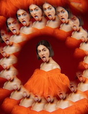
When working class, Cornish comedian Tamsyn Kelly (BBC New Comedy Awards, Comedy Central Live), discovers footage of her estranged father in a Channel 4 documentary, she's forced to stop and reassess her life.
How have men shaped who she is? Will the chicken-shop guy ever give her the time of day? Why was Mr Blobby her first crush?
A brutally honest, but fair appraisal of the men in her life, from a woman who has cried in most high-street shops.
★★★★ Funny Women
“Hilarious” Independent
“Great charm” Chortle
Photo by Rebecca Need-Menear.
Dan Tiernan: Going Under
He's 27, gay and riddled with dyspraxia. Dan's had a big year, quitting his job as a dinner lady, going full-time in comedy and finally leaving home, yet somehow he still feels he's completely going under. The reigning BBC New Comedy Awards winner and British Comedian of the Year presents his gag-heavy, high-energy debut hour.
Tour support for Micky Flanagan and Jamali Maddix.
As seen on BBC, Channel 4, Comedy Central, Dave and ITV2.
“Raucously entertaining” Guardian
“A force-of-nature who sweeps the room up in his exhilarating performance into a frenzy of laughter” Chortle
Photo by Jiksaw.
Lorna Rose Treen: Skin Pigeon
Character comedian Lorna Rose Treen has been pretending to be other people for fun since she could dress herself. Now she's inviting you inside her mind for an hour of characters, comedy, content, content, content, costumes and content. The greatest thing to come out of Redditch since the fishing tackle. The debut show from Chortle's Best Newcomer 2023 and Funny Women Awards' first-ever double winner (2022).
“I laughed so much I violently bit my tongue” Independent
“Off-kilter energy and unflagging commitment to the silly” Chortle
.
Nathan D'Arcy Roberts: Present/Tense
Nathan wants to live in the moment but the past has a way of finding him. This hotly anticipated return to the Fringe, from an exciting new voice with a unique perspective, takes on the vital contemporary issues: modern masculinity, racial identity and bizarre song choices in McDonald's.
Winner of the BBC's prestigious Felix Dexter Bursary, twice nominated for the BBC New Comedy Award. Writer for Horrible Histories, The Emily Atack Show, and The Now Show.
Tarot: Hive Mind
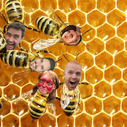
Hive Mind is a gameshow in which contestants have to crowdsource their way to victory. We came up with this idea while eating a Mexican meal. Come watch Tarot go all shiny floor and sequins and try and crowdsource their way to a format.
“Bark out loud funny…” ★★★★ Guardian
“A very nice Mexican meal” ★★★★★ Tarot
Photo by Ed Easton.
We have announced 47 of the festival's 48 shows. Every single show at the festival is a preview or work-in-progress — they may be rough around the edges!
All shows are first come first served, entry to particular shows is not guaranteed (but we do our best to fit people in!) Line-up subject to change.
Hosts
This year's hosts are:
- Annie McGrath: as seen on Live from Barry Island (BBC One), The Outlaws (BBC One), The People We Hate at the Wedding (Prime Video), The Paddock (Channel 4), and a few more things that wouldn’t fit into the word count.
- Ray Badran: as seen on Comedy Central, Jonathan Ross’s Comedy Club and Live At The Moth Club
- Sarah Bennetto: “She succeeds because she is such a skilful raconteur, not only coaxing big laughs, but also those moments of poignancy and inspiration to which so many performers don’t even get close.” ★★★★ Three Weeks
- Amy Annette: as seen in The Paddock (Channel 4), she has supported comedians like Rose Matafeo in the West End and Lou Sanders on tour
- Ben Pope: “Consistently funny and deceptively thoughtful” Scotsman
- Ruby Carr: Funny Women Comedy Writing Award winner 2022 and Funny Women One to Watch 2021
- Joz Norris: Comedians' Choice Award winner for Best Show at the Edinburgh Fringe in 2019; creator and star of the critic's choice BBC Radio 4 sitcom The Dream Factory. “Really does capture the spirit of Fringe comedy.” Guardian
- Kathryn Higgins: “Kathryn is such a funny, funny lady on and off stage. She’s one of the most talented MCs I’ve seen in a long time.” Rosie Jones
- Saima Ferdows: comedy goblin and Oscar losing Writer's Assistant (Borat 2)
- Nathaniel Metcalfe: “delightfully silly” Time Out
- Alice-India: 2Northdown and Leicester Square Theatre Finalist, Alice-India is the little queer voice in your head
- Richard Sandling: an award winning stand-up comedian and actor and is the writer/director/star of the sci fi comedy feature film PHASE. “Expect big laughs” Guardian